This model wasn't deliberately engineered — it evolved organically over more than two decades of practice. It fuses North America's design and innovation DNA with China's manufacturing efficiency and supply chain depth, creating a competitive edge that stands apart in the medical device manufacturing landscape.

Twelve thousand kilometers. Twelve time zones. Two cities. One team. This isn't a plot from a novel — it's Inertia's daily reality. Toronto and Guangzhou — one on the North American eastern seaboard across the ocean, the other in the manufacturing heartland of the Pearl River Delta — together form Inertia's unique "dual-shore" operating model.
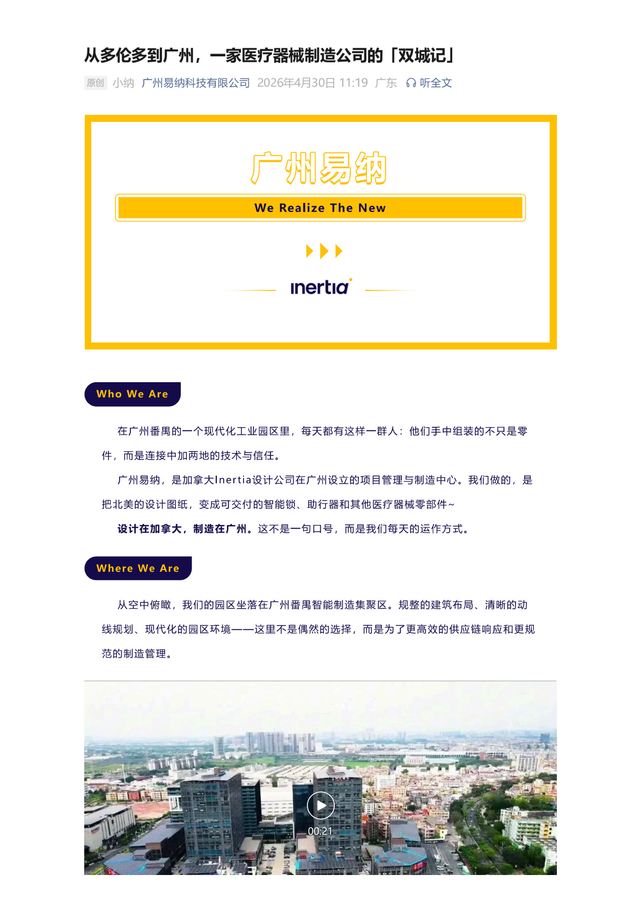
Part 1 Toronto: The Innovation "Brain" and Market "Eyes"
Toronto is where Inertia began. It is home to our R&D and design team, our brand and creative team, and our global markets team. They are closest to the client — whether a North American medtech startup or a multinational giant, the Toronto team can understand client needs at first contact, provide design solutions, and complete engineering validation.
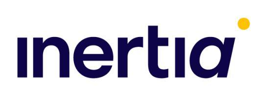
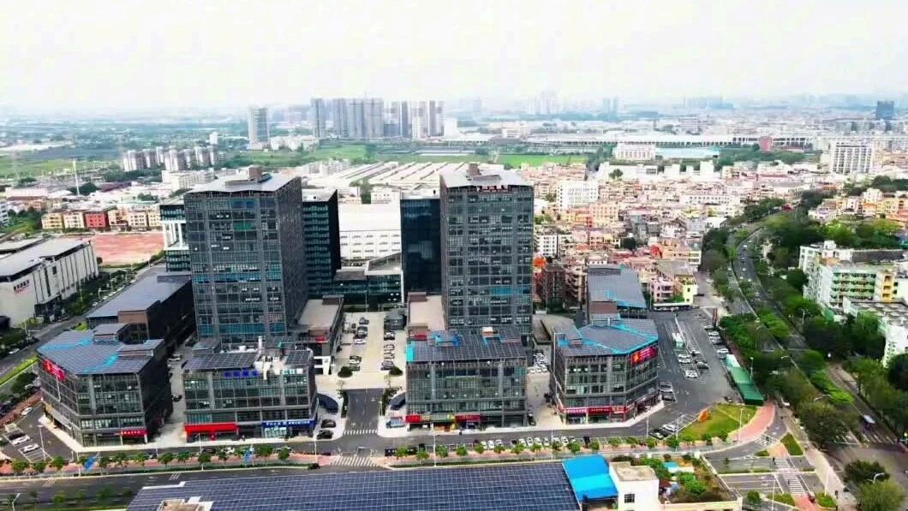
Toronto's role can be captured in two words: "brain" and "eyes." As the "brain," the Toronto team handles product concept design, industrial design, engineering development, and prototype validation — ensuring every product reaches the manufacturing stage with a mature design and manageable risks. As the "eyes," they stay tightly connected to North American market demands and technology frontiers, continuously feeding the Guangzhou team with the latest industry insights and customer expectations.
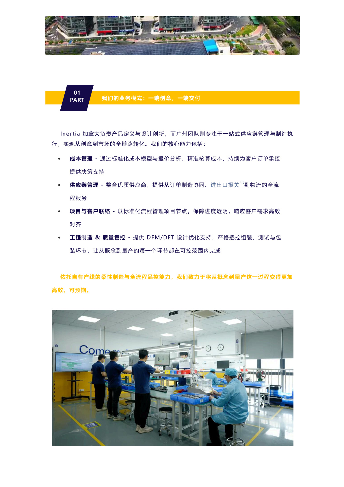
Part 2 Guangzhou: The Manufacturing "Hands" and Supply Chain "Roots"
Guangzhou is Inertia's manufacturing base. It is home to our production team, supply chain management team, quality control team, and project delivery team. They are the practitioners who combine China's manufacturing strengths with Inertia's global quality standards — leveraging the Pearl River Delta's comprehensive industrial ecosystem and ISO 13485-compliant systematic management to transform design blueprints into high-quality physical products.

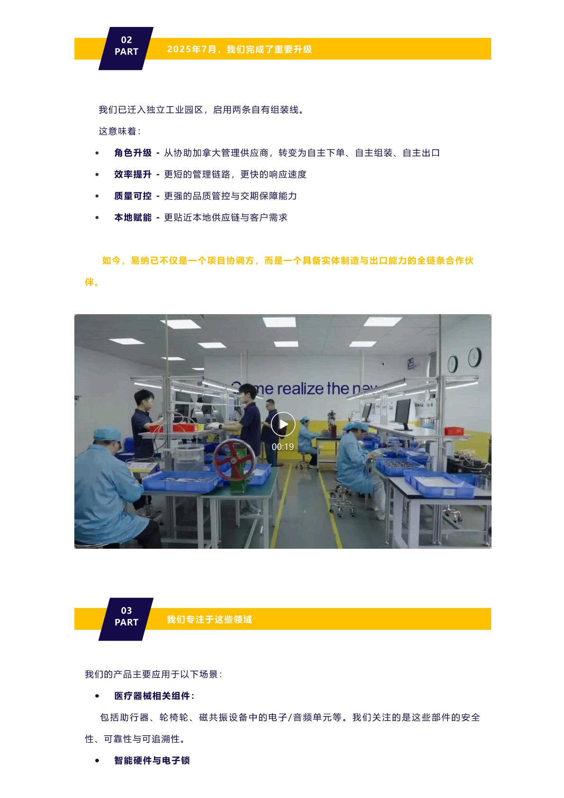
Guangzhou's role can also be captured in two words: "hands" and "roots." As the "hands," the Guangzhou team translates designs into manufacturable process plans and manages the full chain from component procurement and precision machining to assembly, testing, and finished product shipment. As the "roots," they draw on the Pearl River Delta's supply chain depth to ensure stable material supply, cost control, and on-time delivery — among the most fundamental competitive strengths of any manufacturing enterprise.
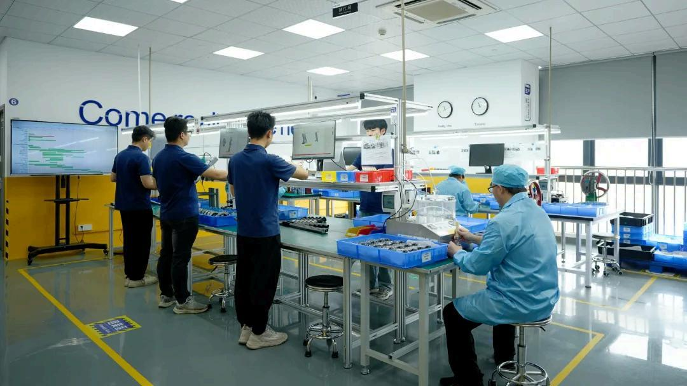
Part 3 Dual-City Synergy: The Secret of 1+1 Greater Than 2
The core value of the dual-city model isn't simple "division of labor" — it's deep "synergy." When Toronto advances design reviews in the afternoon, it's already the next morning in Guangzhou, and the manufacturing team can immediately respond to design changes. When Guangzhou completes production during the day, Toronto is just greeting a new day, and quality data and progress reports reach clients without delay.
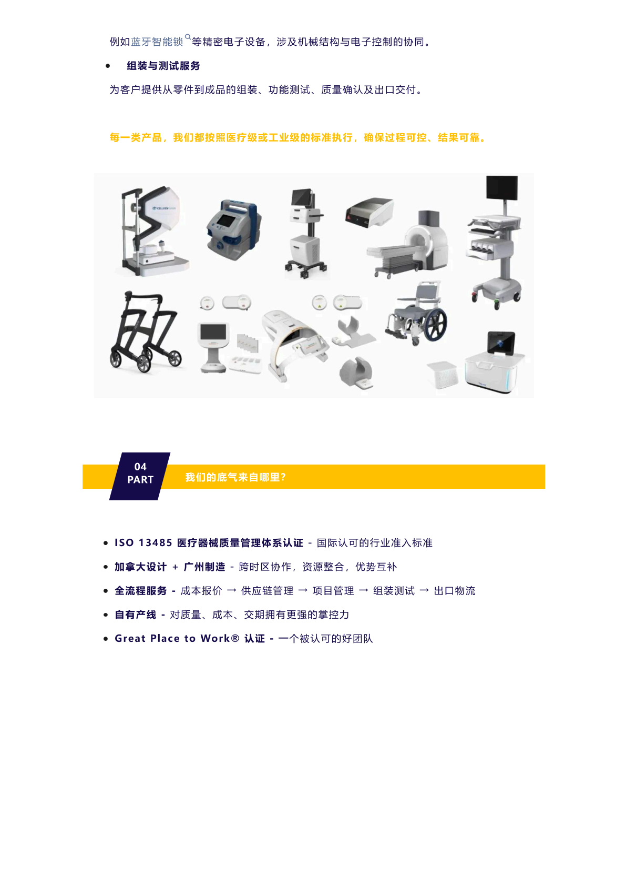
Twelve time zones apart — no longer a barrier, but an advantage. It makes Inertia a company that "operates around the clock." When one city falls asleep, the other picks up the baton. This isn't an extension of overtime culture — it's a collaboration rhythm gifted by natural time zones.
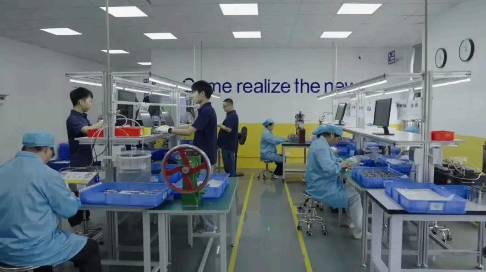
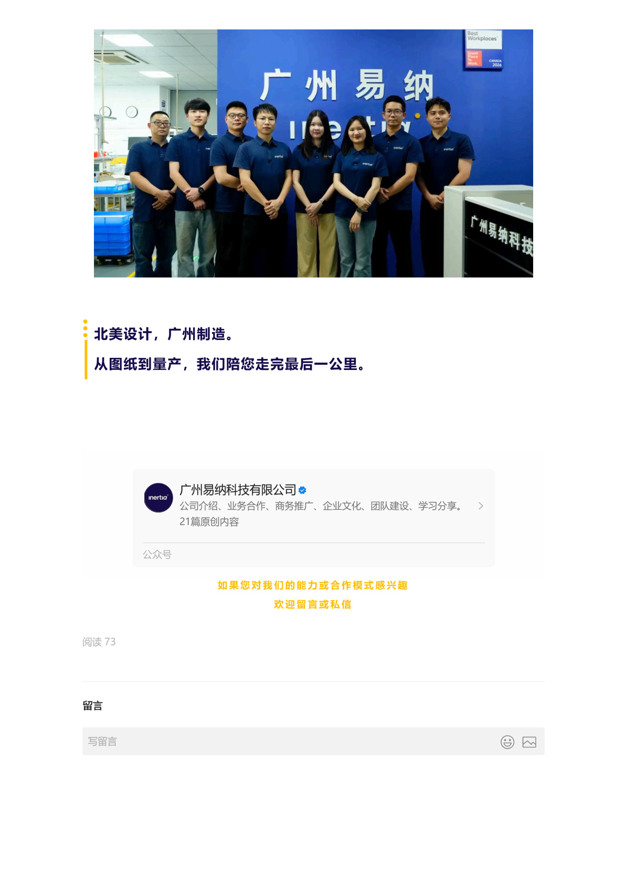
Synergy doesn't happen by accident — it's built systematically. Between the two cities, we've established a unified project management platform, standardized technical documentation systems, real-time quality data sharing mechanisms, and regular cross-city technical exchanges. Tools enable information flow; culture enables trust to take root.
Part 4 Client Value: Why Clients Choose the Dual-City Model
For clients, Inertia's dual-city model delivers three direct benefits. First, zero-lag communication — your needs and feedback get responses at any hour of the 24-hour day. Second, guaranteed quality — from North American design standards to Chinese manufacturing execution, the entire process is controlled under the ISO 13485 system. Third, cost advantage — combining Chinese manufacturing efficiency with North American design quality delivers the optimal value proposition.
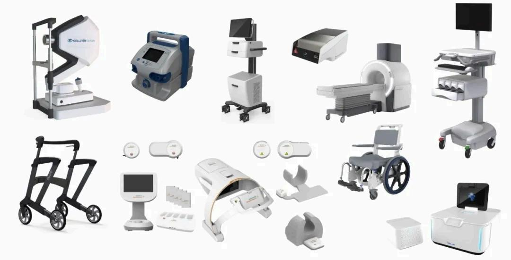
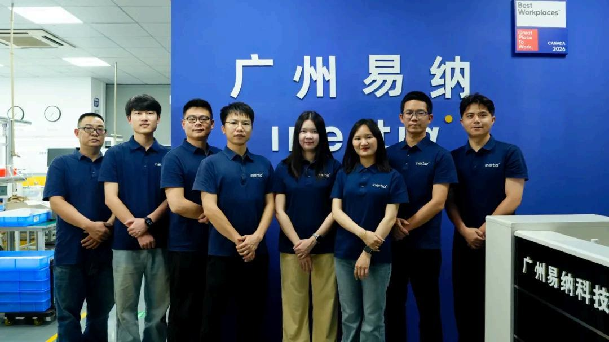
The dual-shore model is not "outsourcing" — it's "integration." Toronto and Guangzhou are not in a client-supplier relationship, nor a headquarters-vs-branch hierarchy. They are two "stations" of one team. One standard, one system, one culture — clients always face the same Inertia, regardless of time zone, regardless of location.
A tale of two cities is not a story about distance — it's a story about connection. Two cities, two countries, two cultures — tightly bound by one mission: to make better products for the global healthcare industry.
From Toronto to Guangzhou — twelve thousand kilometers, twelve time zones, two cities, one team. This is not a geographic accident — it is a strategic choice. Inertia's tale of two cities writes a new chapter every day — about quality, about innovation, about trust, and about crossing oceans together.